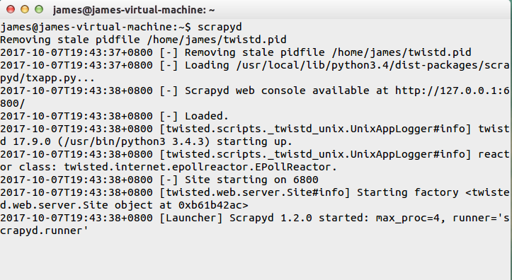

本文是 Scrapy 爬虫系列的最后一篇文章。主要讲述如何将我们编写的爬虫程序部署到生产环境中。我们使用由 scrapy 官方提供的爬虫管理工具 scrapyd 来部署爬虫程序。
为什么使用 scrapyd?
一是它由 scrapy 官方提供的，二是我们使用它可以非常方便地运用 JSON API来部署爬虫、控制爬虫以及查看运行日志。
使用 scrapyd
原理
选择一台主机当做服务器，安装并启动 scrapyd 服务。再这之后，scrapyd 会以守护进程的方式存在系统中，监听爬虫地运行与请求，然后启动进程来执行爬虫程序。
安装 scrapyd
使用 pip 能比较方便地安装 scrapyd。
1 | pip install scrapyd |
启动 scrapyd
在终端命令行下以下命令来启动服务：
1 | scrapyd |
启动服务结果如下：

scrapyd 也提供了 web 的接口。方便我们查看和管理爬虫程序。默认情况下 scrapyd 监听 6800 端口，运行 scrapyd 后。在本机上使用浏览器访问 http://localhost:6800/地址即可查看到当前可以运行的项目。

项目部署
直接使用 scrapyd-client 提供的 scrapyd-deploy 工具
原理
scrapyd 是运行在服务器端，而 scrapyd-client 是运行在客户端。客户端使用 scrapyd-client 通过调用 scrapyd 的 json 接口来部署爬虫项目。
安装 scrapyd-client
在终端下运行以下安装命令：
1 | pip install scrapyd-client |
配置项目的服务器信息
修改工程目录下的 scrapy.cfg 文件。
1 | # Automatically created by: scrapy startproject |
如果你服务器有配置 HTTP basic authentication 验证，那么需要在 scrapy.cfg 文件增加用户名和密码。这是用于登录服务器用的。
1 | [settings] |
部署爬虫程序
在爬虫项目根目录下执行下面的命令:
1 | scrapyd-deploy <target> -p <project> |
其中 target 为上一步配置的服务器名称，project 为项目名称，可以根据实际情况自己指定。
我指定 target 为 server，project 为 demo，所以我要执行的命令如下：
1 | scrapyd-deploy server -p demo |
部署操作会打包你的当前项目，如果当前项目下有setup.py文件，就会使用它，没有的会就会自动创建一个。(如果后期项目需要打包的话，可以根据自己的需要修改里面的信息，也可以暂时不管它). 从返回的结果里面，我们可以看到部署的状态，项目名称，版本号和爬虫个数，以及当前的主机名称.
运行结果如下：
1 | $ scrapyd-deploy server -p demo |
使用以下命令检查部署爬虫结果：
1 | scrapyd-deploy -l 服务器名称 |
我指定服务器名称为 server，所以要执行命令如下：
1 | $ scrapyd-deploy -L sever |
刷新 http://localhost:6800/ 页面, 也可以看到Available projects: demo的字样。
使用 API 管理爬虫
scrapyd 的 web 界面比较简单，主要用于监控，所有的调度工作全部依靠接口实现。官方推荐使用 curl 来管理爬虫。
所以要先安装 curl。
windows 用户可以到该网站
https://curl.haxx.se/download.html下载 curl 安装包进行安装。ubuntu/Mac 用户直接使用命令行安装即可。
开启爬虫 schedule
在爬虫项目的根目录下，使用终端运行以下命令：
1 | curl http://localhost:6800/schedule.json -d project=demo -d spider=demo_spider |
成功启动爬虫结果如下：
1 | curl http://localhost:6800/schedule.json -d project=tutorial -d spider=tencent |
取消爬虫
1 | curl http://localhost:6800/cancel.json -d project=demo -d job=94bd8ce041fd11e6af1a000c2969bafd |
列出项目
1 | curl http://localhost:6800/listprojects.json |
列出爬虫、版本、job 信息
1 | curl http://localhost:6800/listspiders.json?project=demo |
删除爬虫项目
1 | curl http://localhost:6800/delproject.json -d project=demo |